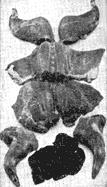
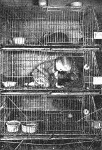
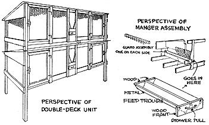
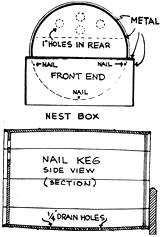

ONE of the first projects I wanted when we moved to our place in the country was rabbits. I had read many times that they produced excellent tasting meat at little cost. Carolyn, however, was sort of skeptical of the project because she thought that she she might not be able to eat the rabbits - they looked so cute.
One pay-day when I happened to read an advertisement offering a six compartment, all-metal wire hutch for sale for less than $20 I couldn't resist this good buy. The hutch eventually came, but Carolyn was still skeptical and, anyway, we were up to our necks getting our barn finished up, learning to milk, .running our broiler battery, our bees, goats, and setting the geese. It wasn't hard to put off getting the rabbits for a while.
Then, a friend of mine, Wally Boren noticed I hadn't done anything with my rabbit hutch and he asked if he couldn't use it until I got ready. That was all right with me. He borrowed the hutch, set it up in his garage and began reading up on the subject of rabbits.
Choosing a Breed
Wally picked a variety called the Chinchilla. You can take your pick of several good meat breeds. Wally favored the medium sized breeds - weighing around 8 to 10 pounds grown. You could go in for the Flemish Giants, for instance, that sometimes weigh 20 pounds. They eat a lot more, of course, and their fryers, at 7 to 9 weeks, weigh not too much more than do those of the medium breeds at the same age. The New Zealand Whites are another popular medium weight breed - their white fur is worth more than the Chinchilla ...and there are are a number of other good medium weight breeds.
Of course, there are Angoras (with their beautiful, white, long fur) and other "fancy" breeds. But these are not meat rabbits. In ordinary times many of the small rabbit raisers don't bother to save the skins, but they do have some value. Right now, for example, buyers are offering from 30 cents a pound to 90 cents apiece. You can obtain names of buyers from one of the rabbit magazines.
Wally started with a "trio" - a young buck nine months old and two does of the same age. He bred the does shortly after he got them. The following month he had 17 bunnies. Seven is a big enough litter, according to the experts, for one doe to raise. So Wally destroyed four from one litter of 12 and gave the other doe an extra to bring her litter of 6 up to 7. Wally rubbed a little Mentholatum on her nose so she couldn't smell the difference between her own and the young one from the other litter.
At seven weeks all 14 of the young rabbits were alive and frisky. At this age they weighed 44 pounds. The two does were bred again.
8c to 14c A Pound
Wally kept some careful records. Here's what he learned from them. A Chinchilla weighing 3 pounds, live weight will cost you from 25c to 35c or a little more to raise. You'd pay a dollar, at least, in the market for him.
Wally figured out how much time it took him to raise one 3 pound fryer. It took one hour flat . That is, he explained, "I spent 14 hours actual chore time - as a dub beginner - raising 14 meat-meals for the family. I could cut that in half, but I like puttering around them."
Wally had such good luck with the rabbits that, of course, I wanted to see what I could do. Wally, who is a most generous-minded fellow, kept us supplied with rabbit - he kept saying that after all he had to pay "rent" in some form or other for the hutch. Carolyn and I both liked rabbit very much; it tastes something like chicken but has a "firmness" that chicken doesn't have. I guess it was a year before I got my hutch back and got to keeping rabbits myself.
Incidentally, after we did get the rabbits we didn't mind the idea of raising them to eat - I guess after eating some rabbits raised by somebody else it's easier to go into rabbit raising strictly from the standpoint of raising them for meat and not let yourself make pets of them. Of course, when you can put rabbits or chicken or anything else in a freezer and leave them there for a few weeks or months you'll find that you think of them as "meat" - not "cute animals."
What To Feed Rabbits
You'll see in the diagram on Page 43 a hayrack indicated for each hutch. This you keep full of hay - the rabbit experts, because the industry is located in California where Alfalfa is easily obtainable, recommend Alfalfa. But a good, leafy clover hay is all right. Timothy isn't as high in protein as clover, but if it's properly cured it's better than a poorly cured clover or Alfalfa. The rabbits can manage the hay better if it is cut up in 3 or 4 inch lengths. (Take a handful, squeeze it into a bundle and saw it off into a box with an ordinary hand saw.) You can also feed vetch, cow peas, and other rich hays. You can give your rabbits dried scraps of bread and crusts; also any kind of vegetable parings and tops they'll eat. You can feed them lawn trimmings and weeds. But don't leave what they fail to eat in the pen. Take it out next day and pretty soon you'll find what they like best and how much to feed. Rabbits relish carrots and other root vegetables. Feed green feeds sparingly, at first if your rabbits aren't used to them. Sometimes they over-eat and bloat or get diarrhea.
You also feed them one of the prepared rabbit pellet foods or whole grain - they don't seem to like any grain that's ground up too fine. You can ask the man you buy your rabbits from for directions as to what he's found the best methods of feeding.
How Fast Do Rabbits Multiply?
Everybody has a story about how fast rabbits multiply. I remember a friend of mine who had a small family and worried about this when getting his rabbits. In fact, he decided that he'd start with the minimum a single doe and a single buck. He was a salesman and everytime I'd see him I'd ask, "Well, how many rabbits have you now." The first month it was just two. The second month it was two. The third month it was still two. About this time my friend began to worry about his rabbits not multiplying. And when, at the end of the fourth month, he still had only two, I began to get a little suspicious. Sure enough, he didn't have a doe and a buck - he had two bucks!
Determining the sex of a rabbit is easy. Get the man you buy your rabbits from to show you.
I find that two does and a buck produce 40 or 50 rabbits a year to eat. At three pounds or more that is all our family needs.
You breed about every 90 days. Gestation only takes 30 to 32 days. The young nurse for five or six weeks, learning to eat as they go along. At six or seven weeks you put the young fryers in another hutch or two and eat them between then and ten or twelve weeks. Or you process the whole tender crop at 8 or 9 weeks and quick-freeze all except the one you want for dinner then.
You can eat them as fryers until they're seven or eight months old-full grown. But by that time they've eaten a great deal of fairly high priced food and therefore aren't so much of a bargain, cost-wise. Better separate the young bucks from the does at 3 months.
You can kill off old rabbits at the end of a couple or even three years and make a stew out of them. The skin from a mature rabbit is worth considerably more than from "fryers."
You can "inbreed" with no harm. Just keep a young doe or two out of a litter and breed her to your same buck when she's about 7 to 9 months' old. You can stagger your breeding times, having one fresh litter coming in every 6 weeks from one doe or the other. But if you adopt this system, you can't exchange the young between the does. Every 3 or 4 years buy or trade for a new buck.
And while we're on the subject of buying, try to get good, healthy and strong animals. You don't care about a "show" rabbit but do get good blood. They may even cost you from $10 to $25 a trio; you aren't likely to save money by starting out with $3 worth of scrubs. However, don't worry about pedigree or perfect markings or blue ribbon winners.
Building the Hutch
Rabbits are very hardy animals, easy to raise and extremely clean. They can stand a lot of cold weather. They can't stand very much of a wetting and hot weather gets 'em down. They wear fur coats in summer remember. They have to have clean feed trays and clean water. They need a cool, shady summer place with lots of ventilation, some sunshine occasionally and a good roof. We keep our metal hutch in the barn. We clean it out once a week, keep plenty of straw on the floor and in the nest box (a nail keg with a strip across it - see illustration) and, in winter we water the rabbits night and morning, taking the water out before it freezes. In summer we keep the water trays always full. They drink a lot.
Hasenpfeffer
Here is a recipe for the famous German way of preparing rabbit. Cut up your rabbit meat and put it into a jar. Cover with vinegar or wine and water, equal parts. Add one sliced onion, salt, peppers, few cloves, bay leaves.
Let this soak in a cool place for two days. Then remove and wipe the meat dry and brown it thoroughly in a frying pan, in hot butter, turning it often. Gradually add the sauce or juice you pickled it in, and let simmer about half an hour, until tender. Before serving stir in one cupful of thick sour cream.
There's a lot more you ought to know about raising rabbits before you go ahead. But I've tried to give you an idea of what's involved. There are one or two good books on rabbits that you'll find worth while reading. You ought to have more detailed information about hutch building, about dressing a rabbit, about keeping records, etc. "See Country Bookstore Catalog."
All in all the impression I'd like to leave is that rabbits are one of the first projects any one interested in home food production should investigate.
The space required by my rabbits is only 3 x 10 feet - and rabbits can be started any time of year.
Easterners are behind the times in discovering how delicious rabbit tastes. In California, where rabbit is king, many prefer it to chicken which it resembles.
No other meat is easier, quicker, as inexpensive for the homesteader to produce as rabbit . . . and it's easier to dress than chicken.
Two good does and a buck will give a family easily 180 pounds of good-tasting meat per year.
A modern, self-cleaning hutch fitted with the new automatic watering, requires less than 5 minutes attention a day.
Suggested Reading:
Rabbits For Food and Fur, $3.00.
|
 Here is how to cut up a rabbit. He makes six generous pieces, plus the liver - as good as chicken liver. |
 When Jackie, three years old in this picture disappears we look in the rabbit hutch. Country raised, he's independent and fearless. |
 Here is a good wood-and wire type of hutch |
|
 Here's a dandy nest box, made from a nail keg. The doe pulls hair and makes a warm fur-lined nest for the young before their birth. You keep the nest box in the doe's hutch from a couple of days before the young arrive until they are ready to leave the nest. |
|
|